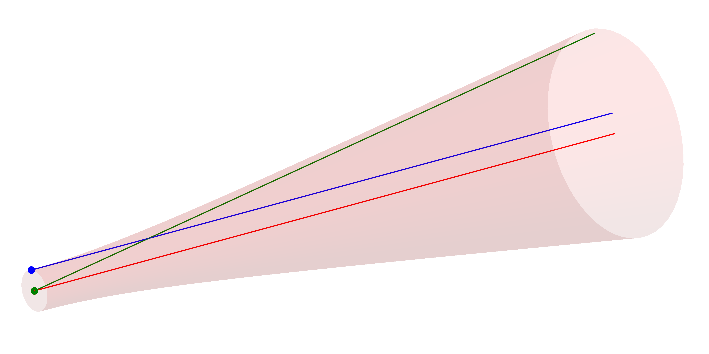
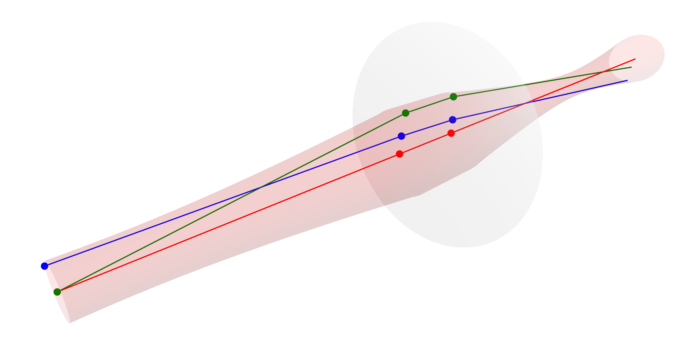
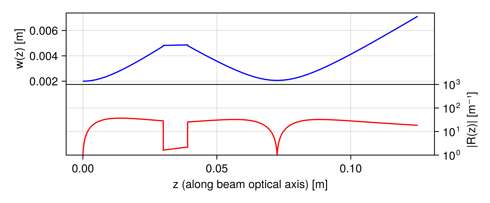

Gaussian beamlet
Lasers are common devices in modern optical laboratories. Modeling their propagation through an optical setup can be of interest when planning new experiments. Geometrical ray tracing struggles to capture the propagation of a laser beam correctly, since it can not inherently capture the wave nature of e.g. the Gaussian beam.
The electric field of the $\text{TEM}_{00}$ spatial Gaussian mode can be calculated analytically using the BeamletOptics.electric_field function:
BeamletOptics.electric_field — Method
electric_field(r, z, E0, w0, w, k, ψ, R) -> ComplexF64Computes the analytical complex electric field distribution of a stigmatic TEM₀₀ Gaussian beam which is described by:
\[E(r,z) = {E_0}\frac{{{w_0}}}{{w(z)}}\exp\left( { - \frac{{{r^2}}}{{w{{(z)}^2}}}} \right)\exp\left(i\left[ {kz + \psi + \frac{{k{r^2}}}{2 R(z)}} \right] \right)\]
Arguments
r: radial distance from beam originz: axial distance from beam originE0: peak electric field amplitudew0: waist radiusw: local beam radiusk: wave number, equal to2π/λψ: Gouy phase shift (defined as $-\text{atan}\left(\frac{z}{z_r}\right)$ !)R: wavefront curvature, i.e. 1/r (radius of curvature)
The evolution of this field through an optical system can be modeled e.g. by the ray transfer matrix formalism using the complex $q$-factor [7, pp. 27]. A Julia-based implementation of this approach can be found in ABCDMatrixOptics.jl. However, in the case of this package another approach will be used.
Complex ray tracing
In 1968 an internal publication at Bell Labs by J. Arnaud introduced the concept of complex rays wherein three geometrical beams can be used to model the propagation of a Gaussian in fundamental mode through a symmetric optical system, i.e. without the Gaussian obtaining astigmatism and/or higher-order abberations. This method is analoguos to the ray transfer matrix based $q$-method [8].
Without extensions of the original method, the following key assumptions must be met such that this method can be applied
- all (complex) beams of the Gaussian in question must intersect the same optical elements
- the optical elements are large compared to the beam (waist)
- the paraxial approximation must hold for each beam
- the Gaussian may not be clipped by hard apertures
- Lagrange invariant must be fulfilled
Various versions of this approach have been implemented under different names in commercial software, most notably FRED, Code V and QUADOA, as well as in open source software, e.g.
- Raypier - based on Cython, maintenance status not known
- Poke - based on Zemax API and Python, maintained by J. Ashcraft et al. [9]
- IfoCAD - maintenance status not known, refer to Wanner et al. [10]
This package implements the above method via the stigmatic GaussianBeamlet and the AstigmaticGaussianBeamlet, the latter of which is presented in more detail in the Astigmatic polarized beamlets chapter.
Stigmatic beamlets
The GaussianBeamlet implements the BeamletOptics.AbstractBeam interface and can be used to model the propagation of a monochromatic Gaussian ($\text{TEM}_{00}$-mode) through optical system where all optics lie on the optical axis, e.g. no tip and/or tilt dealignment, and abberations can be neglected. It is represented by a chief (red), waist (blue) and divergence (green) beam. See below how these beams are placed in relation to the envelope of the Gaussian beam.

BeamletOptics.GaussianBeamlet — Type
GaussianBeamlet{T} <: AbstractBeam{T, Ray{T}}Ray representation of the stigmatic Gaussian beam as per J. Arnaud (1985). The beam quality M2 is fully considered via the divergence angle. The formalism for the beam parameter calculation is based on the following publications:
Jacques Arnaud, "Representation of Gaussian beams by complex rays." Appl. Opt. 24, 538-543 (1985)
and
Donald DeJager and Mark Noethen, "Gaussian beam parameters that use Coddington-based Y-NU paraprincipal ray tracing," Appl. Opt. 31, 2199-2205 (1992)
Fields
chief: aBeamofRays to store the chief raywaist: aBeamofRays to store the waist raydivergence: aBeamofRays to store the divergence rayλ: beam wavelength in [m]w0: local beam waist radius in [m]E0: complex field value in [V/m]parent: reference to the parent beam, if any (Nullableto account for the root beam which has no parent)children: vector of child beams, each child beam represents a branching or bifurcation of the original beam, i.e. beam-splitting
Additional information
Parameters of the beam, e.g. $w(z)$ or $R(z)$, can be obtained through the gauss_parameters function.
A GaussianBeamlet can be constructed via:
BeamletOptics.GaussianBeamlet — Method
GaussianBeamlet(position, direction, λ, w0; kwargs...)Constructs a Gaussian beamlet at its waist with the specified beam parameters.
Arguments
The following inputs and arguments can be used to configure the beamlet:
Inputs
position: origin of the beamletdirection: direction of the beamletλ: wavelength of the beamlet in [m]. Default value is 1000 nm.w0: beam waist (radius) in [m]. Default value is 1 mm.
Keyword Arguments
M2: beam quality factor. Default is 1P0: beam total power in [W]. Default is 1 mWz0: beam waist offset in [m]. Default is 0 msupport:Nullablesupport vector for the construction of the waist and div rays
Additional information
Obtaining the beam parameters
Once a GaussianBeamlet has been traced through an optical system, several parameters might be of interest for further analysis. In order to relate the traced geometrical beams/rays to the Gaussian parameters, the publications of Arnaud, Herloski et al. and DeJager et al. are used [8, 11, 12]. Consider the following system where a Gaussian beam with arbitrary parameters has been traced through a lens using the approach outlined in the Complex ray tracing section.

The user can obtain parameters such as the beam waist radius, the radius of curvature and more using the gauss_parameters and/or waist_parameters functions. Below the local waist radius and curvature $R = r^{-1}$ have been calculated for the example above.
